Disciplinas
INFRAESTRUTURA PARA SISTEMAS DE SOFTWARE Concluído
Materiais
Vídeo 1 - [UFMS Digital] Infraestrutura para Sistemas de Software - Módulo 5 - Unidade 2 - Exemplos de provedores, e seus serviços sendProf.° ministrante: Carlos Alberto da Silva
Conteúdo
Conhecer os provedores de serviços na nuvem
- Container como um Serviço (CaaS)
- Provedores de CaaS
- Testar uma plataforma Docker®
- PodMan®
- E-books sobre Docker®
Container como um Serviço (CaaS)
Deve ser uma plataforma de hospedagem baseada em nuvem, perfeita para gerenciar seus containers Docker®.
Deve oferecer escalabilidade e confiabilidade robustas para qualquer tamanho de projeto.
- Com recursos avançados de gerenciamento como:
- implantação automatizada;
- funcionalidade de auto recuperação;
- e opções de escalonamento personalizadas.
Utiliza os IaaS e PaaS do mesmo provedor
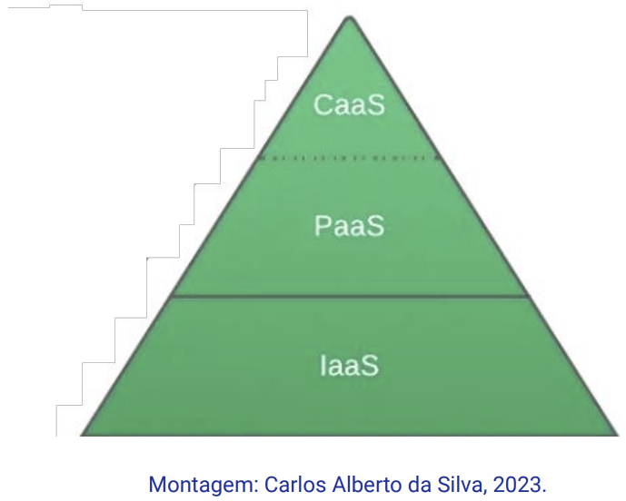Provedores de CaaS
Você pode escolher entre uma variedade de sistemas operacionais e configurações de hardware:
- Amazon Web Services (AWS): a AWS oferece o serviço EC2 (Elastic Compute Cloud)
- Google Cloud
- Microsoft Azure
- IBM Cloud
- Oracle Cloud
- Amazon Web Services (AWS): https://aws.amazon.com/pt
- Google Cloud: https://cloud.google.com/
- Microsoft Azure: https://azure.microsoft.com/pt-br/
- IBM Cloud: https://cloud.ibm.com/login
- Oracle Cloud: https://www.oracle.com/br/cloud/
Símbolos:
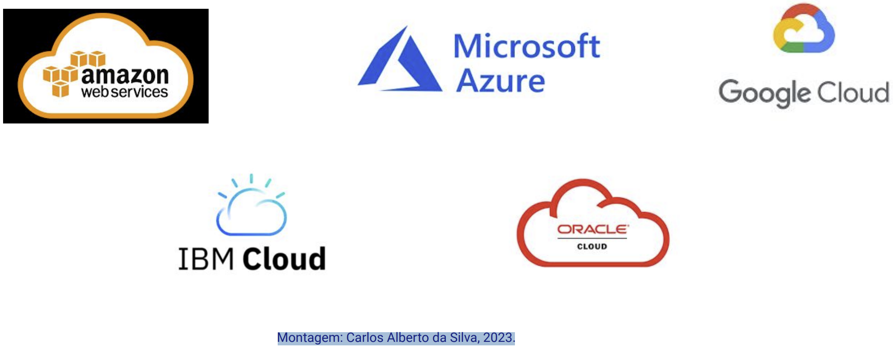 Como tratar este serviço de CaaS- Passos para contratar um serviço na nuvem (CaaS):
- 1) Escolher o provedor;
- 2) Criar uma conta de acesso;
- 3) Registar um cartão de crédito na sua conta;
- 4) Escolher o serviço e finalizar o contrato.
Testar uma plataforma Docker®
Comandos Docker®
Comandos para ↓ Gerenciamento de ↓
builder builds
config Docker configs
container contêineres
context contextos
engine docker engine
network networks
node Swarm nodes
plugin plugins
secret Docker secrets
service serviços
stack Docker stacks
swarm swarm
system system
trust trust on Docker images
volume volumes
Sintaxe do comando em Docker®
Docker (comando global) (comando específico) (parâmetro/s)
⇒ Por exemplo: Listar todos os Containers ativos e inativos
docker container ls -a
Comandos gerais
- docker version (no cliente ou servidor);
- docker login (no Docker Hub®);
- docker logout (no Docker Hub®);
- docker system prune - eliminar os containers:
- parados (stopped);
- de redes inativas;
- de imagens de teste.
- create – cria novo container baseado em uma imagem;
- start – inicializa um container existente;
- run – cria um container e o inicia;
- ls – lista todos os containers ativos;
- inspect – fornece informações mais completas sobre um container;
- logs – lista os logs de um container específico.
- stop – interrompe um container ativo.
- rm – remove um container parado.
⇒ Por exemplo: Inspecionar um container com:
docker container inspect (nome do container)
Comandos para Imagem
- build – cria uma imagem baseada em um Dockerfile®;
- push – faz upload de uma imagem para o repositório;
- tag – permite atribuir uma tag à imagem;
- ls – lista todas as imagens baixadas atualmente;
- inspect – obtém mais informações de uma imagem;
- rm – remove uma imagem do sistema.
⇒ Por exemplo: docker rm (nome da imagem)
Comandos para redes e volumes- ls – lista todas as redes ou volumes
- rm – remove uma rede ou volume
- create – cria nova rede ou volume
- inspect – fornece informações mais completas sobre uma rede ou volume
- prune - eliminar uma rede ou volume
⇒ Por exemplo: docker network create (nome da rede)
Testar uma plataforma Docker®Site https://labs.play-with-docker.com/
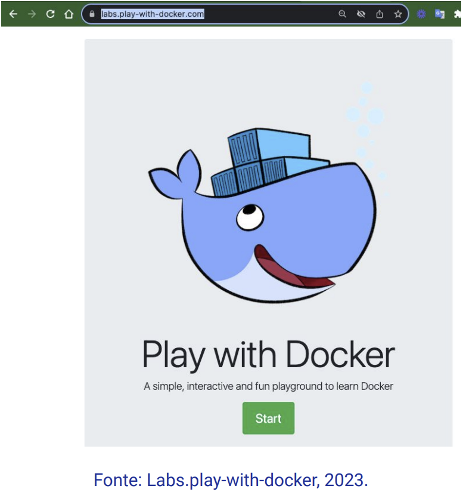Site https://labs.play-with-docker.com/
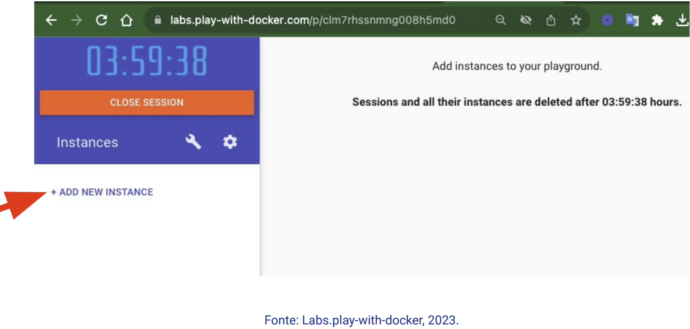Site https://labs.play-with-docker.com/
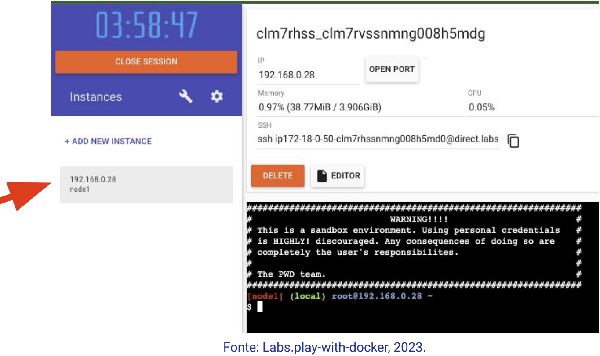Digite o comando:
- docker version
Site https://labs.play-with-docker.com/
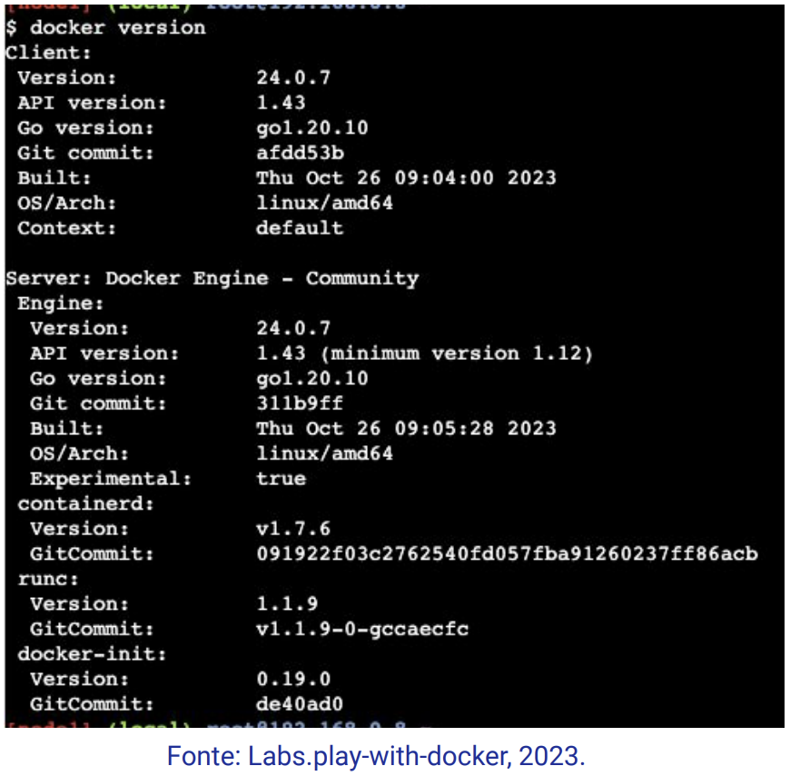Digite o comando:
- docker container ls -a
Site https://labs.play-with-docker.com/
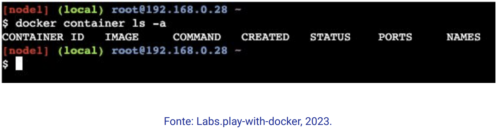Criar outro container (instância)
Site https://labs.play-with-docker.com/

Temos 2 containers:
com números IP: 192.168.0.28 e 192.168.0.27.
Site https://labs.play-with-docker.com/
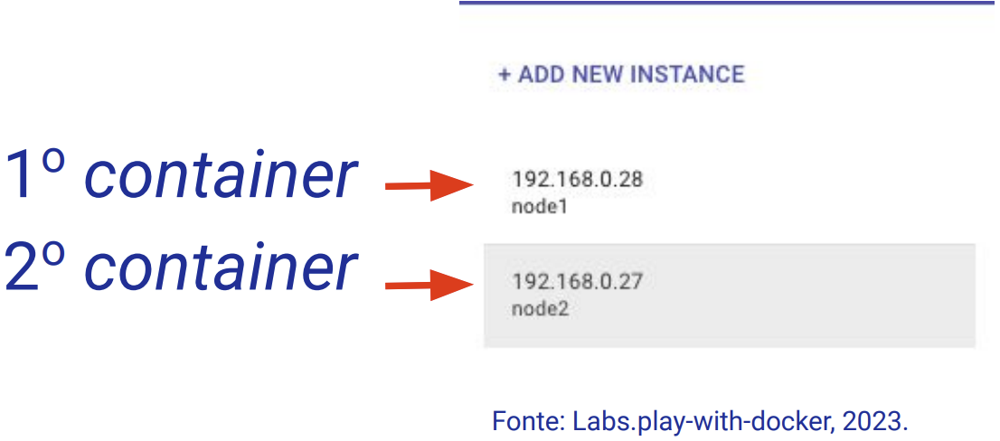Digitar o comando no 1º container (192.168.0.28):
curl -I 192.168.0.27
Falha de conexão com o servidor Web no IP: 192.168.0.27
Site https://labs.play-with-docker.com/
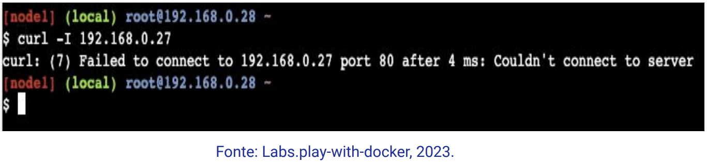Digitar o comando no 2º container (192.168.0.27):
docker pull nginx
Site https://labs.play-with-docker.com/
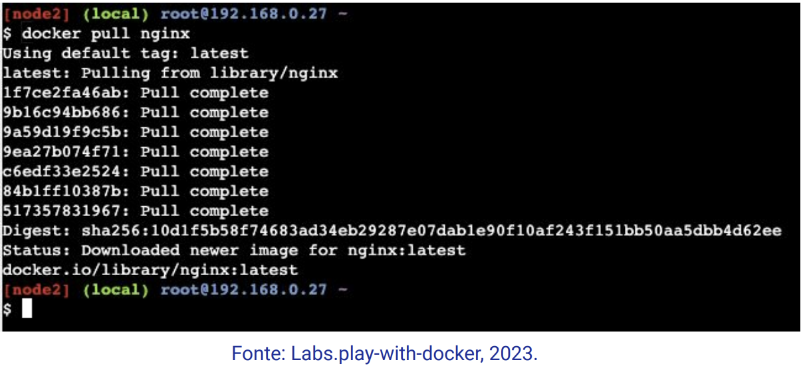Digitar o comando no 2º container (192.168.0.27):
docker run -d -p 80:80 nginx
Site https://labs.play-with-docker.com/
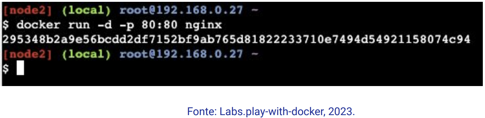Digitar no 1º container (192.168.0.28):
curl -I 192.168.0.27
Site https://labs.play-with-docker.com/

Podman®
Podman® (POD MANager)
Documentação em:
https://podman.io/
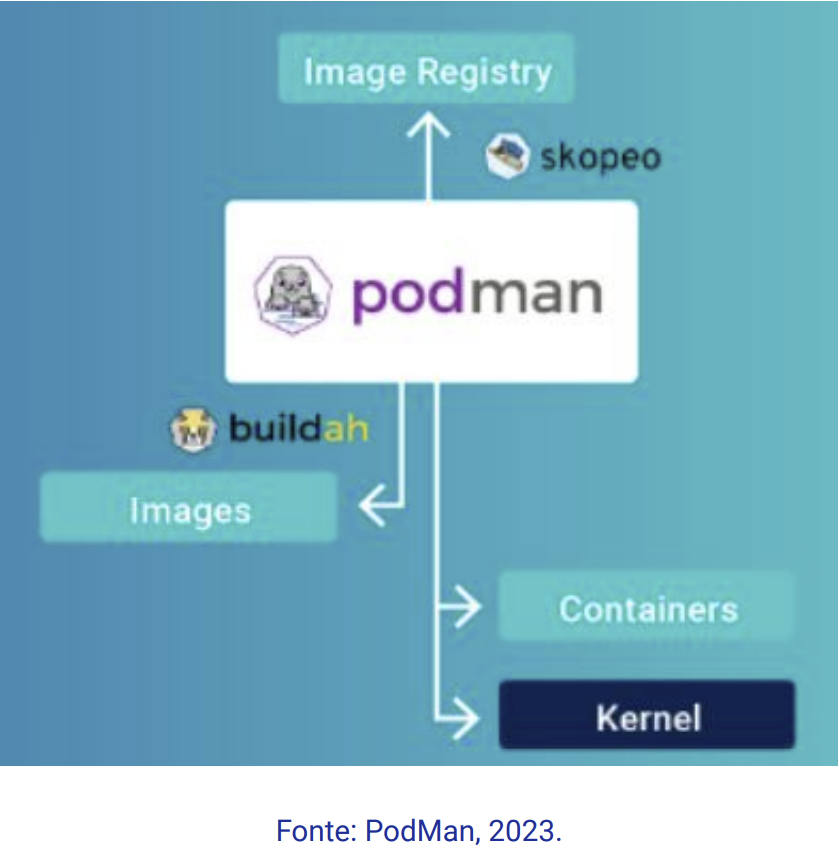- Concorrente do Docker®;
- Podman® foi criado sem daemon;
Para desenvolver, gerenciar e executar containers OCI em seu sistema Linux;
A biblioteca libpod fornece APIs para gerenciar containers, pods, imagens de container e volumes.
E-books sobre Docker®
- https://dotnet.microsoft.com/pt-br/download/e-book/microservices-architecture/pdf
- https://aka.ms/liftandshiftwithcontainersebook
- https://pub.erudio.com.br/guia-docker
- https://docs.oracle.com/cd/F61410_01/docker/OL-DOCKER.pdf
Referências:
AMAZON AWS. [Online]. Disponível em: https://www.aws.amazon.com/pt/. Acessado em: 18 de novembro de 2023.
DOCKER. [Online]. Disponível em: https://www.docker.com/. Acessado em: 18 de novembro de 2023.
PLAY WITH DOCKER. [Online]. Disponivel em: https://labs.play-with-docker.com/. Acessado em: 18 de novembro de 2023.
PODMAN. [Online]. Disponivel em: https://podman.io/. Acessado em: 18 de novembro de 2023.